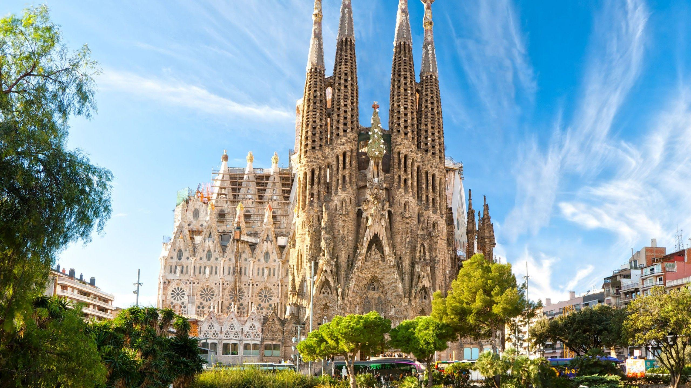

스페인에서 두 번째로 큰 도시이자 가장 큰 항구 도시기도 하다.
바르셀로나는 스페인 최대 관광도시로 일반관광뿐만 아니라 컨벤션·비즈니스 관광(MICE) 산업도 발달해있다.
주요 관광 명소로는 사그라다 파밀리아를 비롯한 구엘 공원, 가우디가 건축한 각종 건축물들, 스페인 광장(Plaça d'Espanya), 몬주익,카탈루냐 음악당, 리세우 극장, 카탈루냐 미술관(MNAC), 호안 미로 미술관, 바르셀로나 동물원, 바르셀로나 현대 미술관, 바르셀로나 피카소 미술관 등이 있다.
축구 팬이라면 FC 바르셀로나의 홈 경기장인 캄프 누 또한 빼놓을 수 없는 관광 명소다. 대부분의 관광 명소는 바르셀로나를 관통하는 주도로 'Avenida Diagonal'(대각선 대로)를 중심으로 밀집되어 있다. 그 외에도 시간이 난다면 매일 보여주는 몬주익 분수쇼같은 각종 쇼를 볼 수 있다. 또한 플라멩코로도 유명하다. 세비야, 마드리드와 함께 플라멩고 3대 도시로 불리고 있다.